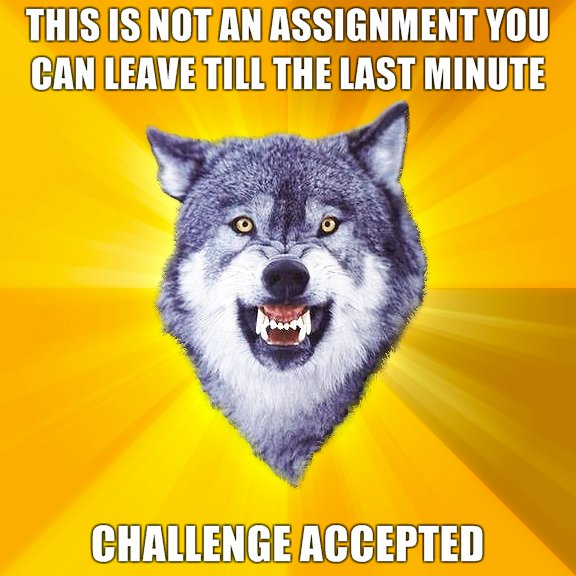
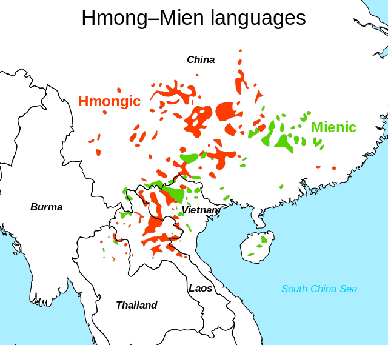
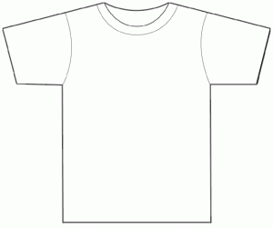
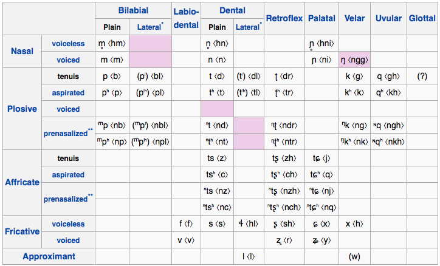
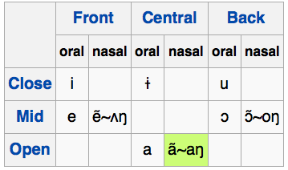
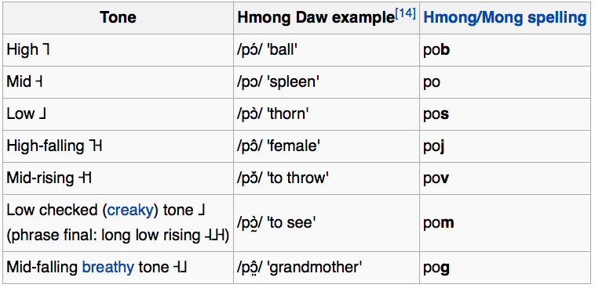
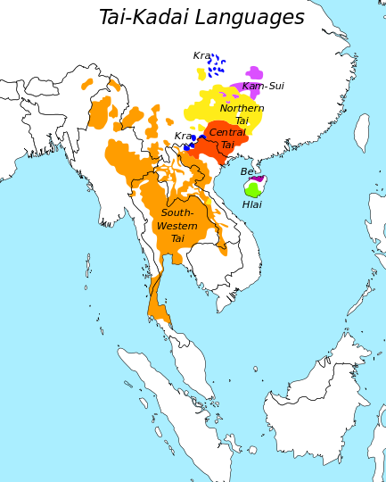
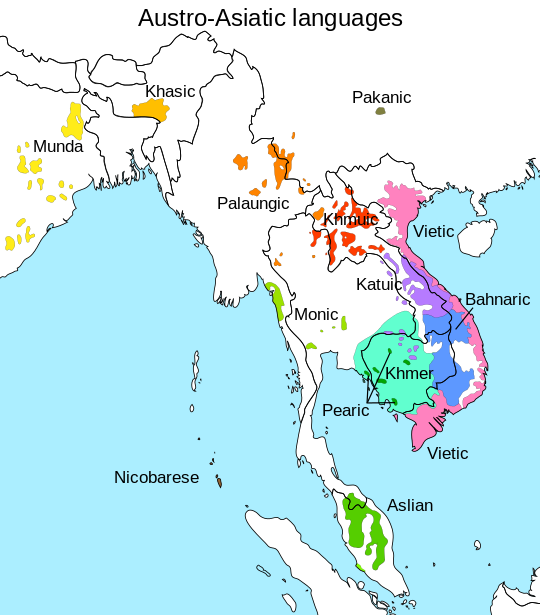

<lang>Thai</lang><br><ldata>Tai-Kadai - Thailand</ldata> <iframe data-autoplay width="840" height="690" src="http://www.youtube.com/embed/DU9PayTno14"></iframe> Z-Hot feat Zero - From the deepest corner --- ### Fact of the Day Will's out of town next week! --- ### Will's out of town next week! * Skype office hours Thursday are cancelled. * Will will be slower to respond to emails * Niloo will talk Austronesian Monday * Nick Williams will talk Indonesian languages Wednesday * I'll bring you back some awesome acoustics! --- ### Administrative Notes * Exams will be handed back Friday in lab * HW4 and HW5 are posted. Enjoy! * <danger>HW4 is due Friday!</danger> ---  --- # Southeast Asian Languages ### LING 1020 - Will Styler --- ### Today's Agenda * Hmong Mien * Tai-Kadai * Austroasiatic * Complexity in Language --- ## Southeast Asia is a Language Area * This means many shared features across the unrelated langauges. --- Put differently... --- ### Today, we're going to see a *lot* of Serial Verbs, Isolating morphology, and **Suprasegmentals** --- <section data-background="img/clickerbkgrnd.png"></section> ### Which of the following is *not* a suprasegmental? A) Level Tone B) Vowel Nasality C) Vowel Length D) Retroflex Consonants E) Contour Tone --- <section data-background="img/clickerbkgrnd.png"></section> ### Which of the following is *not* a suprasegmental? A) Level Tone B) Vowel Nasality C) Vowel Length <correct>D) Retroflex Consonants</correct> E) Contour Tone --- Let's check out the families first! --- # Hmong-Mien ---  --- ### Hmong-Mien Languages * The "H" is a lie. Pronounced "Mong" * Originally called a part of Sino-Tibetan * Around 8 million speakers across Southeast Asia * Denver and Boulder have a sizable Hmong-speaking population --- ### Hmong-Mien Features * Isolating Morphology * Serial Verb Constructions * Numerical Classifiers * Tonality * **Voiceless nasals!** * ... and lots of other fun consonants! * **Suprasegmental-heavy** * Tone, Nasality, Breathy, Creaky --- ### Isolating Morphology Been there, done that... --- <center> <table> <tr> <th></th> <th></th> <th></th> <th></th> </tr> </table> </center> --- ### Serial Verb Constructions, Numerical Classifiers, Tonality Been there, done that, no T-Shirt visual pun * Sorry! --- ### Voiceless Nasals * (and lots of other fun consonants!) --- <lang>Danashan Miao</lang><br><ldata>Hmong-Mien - China</ldata>  --- ### Suprasegmental Heavy --- ### Contrastive Nasality Producing vowels with nasal airflow * This is totally what I'm going to Indianapolis to talk about! --- <lang>Hmong</lang><br><ldata>Hmong-Mien - China</ldata>  --- ### Tone! * Mandarin has 5 tones * Hmong has 7 (8 in some dialects) * Hmong also has breathiness and creak --- <lang>Hmong</lang><br><ldata>Hmong-Mien - China</ldata>  --- <lang>Hmong</lang><br><ldata>Hmong-Mien - China</ldata> <iframe data-autoplay width="840" height="690" src="http://www.youtube.com/embed/Z8uPZnfHPcg"></iframe> --- ### Hmoving on! --- --- # Tai-Kadai ---  --- ### Tai-Kadai Languages! * Around 100 million speakers, across 95 languages * Most commonly spoken languages are Thai and Lao * Thai has around 60 million speakers * Lao has around 3 million speakers --- ### Features of Tai-Kadai * Isolating Morphology * Serial Verb Constructions * Numerical Classifiers * Tonality --- (Seeing a pattern?) --- <lang>Thai</lang><br><ldata>Tai-Kadai - Thailand</ldata> <iframe data-autoplay width="840" height="690" src="http://www.youtube.com/embed/QwY7h5w1MGI"></iframe> --- ### Now that that's all Thai'ed up... --- # Austroasiatic ---  --- ### Austroasiatic Languages * Some people call these "Mon Khmer" * ... but that's not fair to the Munda sub-branch * Vietnamese is the most widely spoken (66 million speakers) * Khmer (16 million), Santali (7 million) and Mundari (1.5 million) are the next most common * The Munda branch is *very* different due to language contact. * Pereltsvaig handles this well :) --- --- <danger> Austroasiatic are *not* the same thing as "Austronesian" or "Afroasiatic" languages</danger> --- ### Austroasiatic:Mon Khmer Features * Isolating Morphology * Serial Verb Constructions * Numerical Classifiers * Tonality * **"Wow, there's something to this "Language area" thing!"** --- ### About those serial verb constructions --- <lang>Vietnamese</lang><br><ldata>Austroasiatic:Mon Khmer - Vietnam</ldata> *tôi muốn đi về nấu nướng cho vợ tôi* * I want go return cook roast give wife me * I want to go home to cook for my wife. --- <lang>Vietnamese</lang><br><ldata>Austroasiatic:Mon Khmer - Vietnam</ldata> <iframe data-autoplay width="840" height="690" src="http://www.youtube.com/embed/deettRsJZOg"></iframe> --- ### Wrapping up Southeast Asia * Sino-Tibetan, Austroasiatic, Hmong-Mien, and Tai-Kadai * Tonality, Isolating, Numerical Classifiers, Serial Verb Constructions * These occur throughout the language area! * Lots of awesome suprasegmentals * ... and very short words --- Now, let's zoom back out. * ### I want to talk about one of the reasons I *love* Language --- # A Love Letter to Complexity --- ### Language is a deeply complex thing * (because the world is deeply complex, and language has to describe it!) --- ### How do languages get nasality/tone/breathiness? * They move complexity around! --- <center> <table> <tr> <th><h2>dan </h2><img src="img/optimus.jpg"></th> <th><h2>dad </h2></th> <th><h2>dag </h2></th> <th><h2>da </h2></th> </tr> </table> </center> --- ### "You know, nasal consonants are lame. Let's get rid of them." <!-- .element: class="fragment" --> --- (Languages get rid of final consonants all the time, actually, and nasals are *very* commonly removed.) --- <center> <table> <tr> <th><h2>da </h2><img src="img/optimus.jpg"></th> <th><h2>dad </h2></th> <th><h2>dag </h2></th> <th><h2>da </h2></th> </tr> </table> </center> <danger>What's just gone wrong?</danger> <!-- .element: class="fragment" --> --- ### "Well, maybe we can't remove nasals completely!" * Let's leave just enough to maintain the contrast! --- <center> <table> <tr> <th><h2>dã </h2><img src="img/optimus.jpg"></th> <th><h2>dad </h2></th> <th><h2>dag </h2></th> <th><h2>da </h2></th> </tr> </table> </center> * <correct>Contrast Preserved!</correct> --- ### "Man, I'm tired of final consonants altogether!" * Let's trash those! --- <center> <table> <tr> <th><h2>dã </h2><img src="img/optimus.jpg"></th> <th><h2>da </h2></th> <th><h2>da </h2></th> <th><h2>da </h2></th> </tr> </table> </center> <danger>Uh-oh!</danger> <!-- .element: class="fragment" --> --- ### "Uh, well, let's... uh... use tone!" --- (There are tiny little aerodynamic properties of consonants that nudge languages towards particular tones.) --- <center> <table> <tr> <th><h2>dã </h2><img src="img/optimus.jpg"></th> <th><h2>dá </h2></th> <th><h2>dà </h2></th> <th><h2>dâ </h2></th> </tr> </table> </center> <correct>Problem solved!</correct> <!-- .element: class="fragment" --> --- ## When you lose a contrast in one place, you need to replace it! --- This reveals a fundamental truth of Language --- We want our language to be... * # 1) Simple enough to be usable * # 2) Complex enough to be clear --- ### Language is all about finding the balance between these two extremes! --- ## We can't let "simple" win... --- ### New Language! * Consonant Inventory: /b/ * Vowel Inventory: /a/ * Strict CV syllables * <danger>What's the problem with this?</danger> --- <center> <table> <tr> <th><h2>ba </h2><img src="img/optimus.jpg"></th> <!-- .element: class="fragment" --> <th><h2>baba </h2></th> <!-- .element: class="fragment" --> <th><h2>bababa </h2></th> <!-- .element: class="fragment" --> <th><h2>babababa </h2></th> <!-- .element: class="fragment" --> </tr> </table> </center> --- The average English speaker knows around 30,000 words --- ## ba(x 30,000) --- <img class="big" src="humorimg/surprisedbuffalo.jpg"> --- ### Let's go more complex! * Consonant Inventory: /b, d/ * Vowel Inventory: /a, i/ * Strict CV syllables * Four possible syllables (ba, bi, da, di) * To get 30,000 words, the longest would be 8 syllables --- ### More complex still! Consonant Inventory: /b, d, g/ Vowel Inventory: /a, i, u/ Strict CV syllables Nine possible syllables (ba, bi, bu, da, di, du, ga, gi, gu) * To get 30,000 words, the longest would be 5 syllables --- ### What if we added tone? Consonant Inventory: /b, d, g/ Vowel Inventory: /a, i, u/ Strict CV syllables * High, Low, Rising, Falling Tone * 36 possible syllables (ba, bi, bu, da, di, du, ga, gi, gu in all four tones) * To get 30,000 words, the longest would be 3 syllables --- ### What about the other extreme? * All 83 consonants on the IPA chart * All 28 vowels on the IPA chart * Strict CV ordering * 2324 Unique Syllables * With just two syllables, we get 5.4 *million* words --- ### There's more to the story! * Some combinations aren't desirable * Strict CV isn't that common * Morphemes can help! * Listeners can't handle 83 consonants and 28 vowels * ... and they don't need to! * But the moral of the story? --- ## Adding phonetic complexity reduces word length * You're trading "complex sounds" for "shorter words" * ... and tone helps with this! --- ## What about grammatical complexity? --- ### All languages can express everything * For a language to be a language, you must be able to express any concept * There's no such thing as a "simple" language * ... but that doesn't mean it's *easy* to express everything * If you remove a method of expressing something, you'll need to make up for it *somehow* * **You never reduce complexity, just move it around.** --- ### You cannot use tense anymore to mark time. * What happens? How can we cope? --- ### Temporal Arguments! * "I walk to class yesterday" * "I walk to class now" * "I walk to class usually" * "I walk to class tomorrow" * No complexity is lost * No simplicity is gained --- ### What if we removed pre/postpositions? * Case marking * Allative case - Handles "to" (and so on) * This is what Finnish does! * Serial verb constructions * pig bring enter house = "bring the pig inside the house " * This is what Vietnamese does! * Anything else? --- ## Complexity is never removed, just moved! --- Here's a real-life example! --- ## Imagine you're a doctor! --- "Keep records for *every patient*, but we won't pay you to write!" * This forces *simplicity* and *economy* --- "If your records are unclear, I'll sue your pants off!" * This forces *clarity* and *precision* --- The result? --- > s/p lap appy conv. open, Lungs c/ausc, A&Ox3 * "Patient status-post laparoscopic appendectomy converted to open, lungs are clear to auscultation, the patient is alert and oriented x 3" * "The patient has had a laparoscopic appendectomy which, due to a problem, was converted to an open appendectomy. Her lungs weren't producing any concerning sounds when I listened, and she's alert and knows who she is, where she is, and what time it is." --- ## Medical records are hellscapes of inference * cf. [Styler et. al. 2014](http://www.transacl.org/wp-content/uploads/2014/04/47.pdf) --- ### Other Gems from the Medical World “Resected Invasive Grade 3 Adenocarcinoma (AJCC 7th PT4N1bMX) in tubovillious adenoma.” * “We biopsied the colon, the results were negative” * “Noted postoperative scarring.” * “History of Pneumonia, Asthma, h/x diverticulitis, MS” --- ### When you leave out complexity, the listeners need to fill it in. * ... and this is why nobody understands what doctors say! --- # So... --- ### Language is complex * Although we want language to be simple, it needs to be clear! * You can have simple sound systems, or short words. Not both. * Removing complexity in one place adds it back in elsewhere! * Doctors do terrible, dirty, and nasty things to language * ... but it's because they had to! --- <section data-background="img/clickerbkgrnd.png"></section> ### Are you more interested in... a) Language and Language Family Specific Material (like the first part of today) b) Material describing how Language works (like the second part of today) --- ## Next time: Japanese, Korean, and "Altaic" <correct>Read Pereltsvaig Section 11.3</correct> --- <huge>Thank you!</huge>